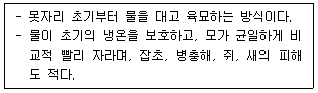
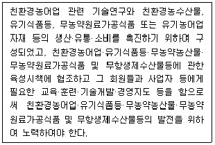
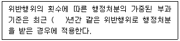
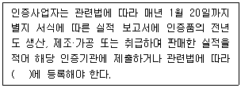
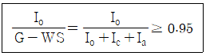

1과목: 재배원론
1. 다음 중 산성토양에서 작물의 적응성이 가장 약한 것은?
2. 다음 중 탄산시비의 효과로 옳지 않은 것은?
3. 대기 중 이산화탄소의 농도로 옳은 것은?
4. 다음 중 굴광현상에 가장 유효한 광은?
5. 다음 중 장일효과를 유도하기 위한 야간조파에 효과적인 광의 파장은?
6. 다음 중 식물분류학적 방법에서 작물 분류로 옳지 않은 것은?
7. 다음 중 연작에 의해서 나타나는 기지현상의 원인으로 옳지 않은 것은?
8. 다음 중 종자 휴면의 원인과 관련이 없는 것은?
9. 다음 중 영양번식의 취목에 해당하지 않는 것은?
10. 다음 중 사과의 축과병, 담배의 끝마름병으로 분열조직에서 괴사를 일으키는 원인으로 옳은 것은?
11. 다음 중 접목부위로 옳게 나열된 것은?
12. 다음 중 내염성 작물로 가장 옳은 것은?
13. 무기성분 중 벼가 많이 흡수하는 것으로 벼의 잎을 직립하게 하여 수광상태가 좋게 되어 동화량을 증대시키는 효과가 있는 것은?
14. 다음 중 중성식물로 옳은 것은?
15. 환상박핃 대 화아분화가 촉진되고 과실의 발달이 조장되는 작물의 내적균형 지표로 가장 알맞은 것은?
16. 다음 중 건물 생산이 최대로 되는 단위면적당 군락엽면적을 뜻하는 용어로 옳은 것은?
17. 다음 중 전분 합성과 관련된 효소로 옳은 것은?
18. 다음 중 골사이나 포기사이의 흙을 포기 밑으로 긁어 모아 주는 것을 뜻하는 용어로 옳은 것은?
19. 다음 중 식물 세포의 크기를 증대시키는데 직접적으로 관여하는 것으로 가장 옳은 것은?
20. 리비히가 주장하였으며 생산량은 가장 소량으로 존재하는 무기성분에 의해 지배받는다는 이론은 무엇인가?
2과목: 토양비옥도 및 관리
21. 염기포화도에서 고려되는 교환성 염기가 아닌 것은?
22. 어떤 토양의 흡착이온을 분석할 결과 Mg = 2 cmol/kg, Na = 1 cmol/kg, Al = 2 cmol/kg, H = 4 cmol/kg, K = 2 cmol/kg 이었다. 이 토양의 CEC가 12 cmol/kg이고 염기포화도는 75%로 계산되었다. 이 토양의 치환성칼슘의 양은 몇 cmol/kg으로 추정되는가?
23. 주로 혐기성균에 의해 일어나는 질소대사는?
24. 식물생장촉진 근권미생물의 기능이 아닌 것은?
25. 유기물의 탄질률과 토양 질소에 대한 설명으로 옳은 것은?
26. 토양 입단구조의 중요성에 대한 설명으로 가장 거리가 먼 것은?
27. 다음 중 접시와 같은 모양이거나 수평배열의 토괴로 구성된 구조로 토양생성과정 중에 발달하거나 인위적인 요인에 의하여 만들어지며, 모재의 특성을 그대로 간직하고 있는 것은?
28. 토양의 생성인자로 가장 거리가 먼 것은?
29. 다음 중 탄질률이 가장 높은 것은?
30. 유기물의 토양물리성에 미치는 영향이 아닌 것은?
31. 우리나라 토양통을 토지이용 형태 기준으로 구분할대 토양통 수가 가장 많은 토지이용 형태는?
32. 다음 중 양이온교환용량이 가장 높은 토양콜로이드는?
33. 다음 중 식물성 유기질 비료로 탄질률이 가장 높은 것은?
34. 화성암 중 중성암으로만 짝지어진 것은?
35. 암모늄태 질소를 아질산태 질소로 산화시키는데 주로 관여하는 세균은?
36. 다음 중 풍화가 가장 어려운 광물은?
37. 다음 중 칼리 함량이 많은 장석이 염기물질의 신속한 용탈작용을 받았을 때 가장 먼저 생성되는 점토광물은?
38. 토양단면 중 농경지의 표층토(경작층)을 가장 옳게 표시한 것은?
39. 스멕타이트를 많이 포함한 토양에 부숙된 유기물을 가할 때 나타나는 현상이 아닌 것은?
40. 유기물의 분해속도에 대한 설명으로 틀린 것은?
3과목: 유기농업개론
41. 다음 중 C3 식물은?
42. 포도나무의 정지법으로 흔히 이용되는 방법이며, 가지를 2단 정도로 길게 직선으로 친 철사에 유인하여 결속시킨 것은?
43. 토양의 질적 수준 및 토양비옥도 유지·증진 수단의 실천기술이 아닌 것은?
44. 1920년대 영국에서 토마토에 발생했던 해충인 온실가루이를 방제했던 기생성 천적은?
45. 고온장해에 대한 설명으로 틀린 것은?
46. 녹비작물의 토양 혼힙에 대한 설명으로 틀린 것은?
47. 동물복지(Animal Welfare) 개선을 위한 조치로 잘못된 것은?
48. 벼 친환경재배 시 규산질 비료 시용을 권장하는 이유로 가장 적합한 것은?
49. 다음 친환경농업을 위한 작물육종 목표 중 가장 중요한 것은?
50. 다음에서 설명하는 육묘방식은?

51. 다음 중 CAM 식물은?
52. 양질의 퇴비를 판정하는 방법으로 틀린 것은?
53. 우리나라에서 친환경농업육성법이 제정된 후 정부가 친환경농업 원년을 선포한 연도는?
54. 『농림축산식품부 소관 친환경농어업 육성 및 유기식품 등의 관리·지원에 관한 법률 시행규칙』 상 병해충 관리를 위하여 사용 가능한 물질 중 사용 가능 조건이 “달팽이 관리용으로만 사용할 것”인 것은?
55. 타식성 작물로만 나열된 것은?
56. 혼파에 대한 설명으로 적절하지 않은 것은?
57. 다음 중 광합성자급영양생물에 해당하는 것은?
58. 녹비작물로 이용하는 헤어리베치 생초 2000kg에 함유된 질소 성분량은 얼마인가? (단, 헤어리베치의 수분은 85%, 건초 질소 함량은 4%를 기준으로 한다.)
59. 다음 중 광포화점이 가장 높은 채소는?
60. 포기를 많이 띄워서 구덩이를 파고 이식하는 방법은?
4과목: 유기식품 가공.유통론
61. 친환경농식품 생산자(조직)가 중간상을 대상으로 판매촉진 활동을 해서 그들이 최종 소비자에게 적극적으로 판매하도록 유도하는 촉진전략은?
62. 유기가공식품 중 설탕 가공 시, 산도조절제로 사용할 수 있는 보조제는?
63. 생산물의 품질관리를 위해 유기식품 가공시설에서 사용하는 소독제로 부적합한 것은?
64. 재고손실률이 5%인 업체의 매출이 1억원이고 장부재고(전산재고)가 1억 2천만원인 경우 실사재고(창고재고)는 얼마인가?
65. 자외선 조사(UV radiation)는 다음 어떤 제품의 살균에 가장 효과적이겠는가?
66. 다음 중 식품공전상 조미식품이 아닌 것은?
67. 우리나라 유기식품 시장을 확대하기 위한 바람직한 전략이 아닌 것은?
68. 식품등의 표시기준에 따르면 식용유지류 제품의 트랜스지방이 100g당 얼마 미만일 경우 “0”으로 표시할 수 있는가?
69. 유기식품을 생산하는 가공시설 내부에 유해 생물을 차단하기 위한 방법으로 잘못된 것은?
70. 유기가공식품 생산 및 취급(유통, 포장 등) 시 사용 가능한 재료에 대한 설명으로 틀린 것은?
71. 현미란 벼의 도정 시 무엇을 제거한 것인가?
72. 유기식품의 가스충전포장에 일반적으로 사용되는 가스성분 중 호기성뿐만 아니라 혐기성균에 대해서도 정균작용을 나타낼 수 있는 가스성분은?
73. 두부응고제, 영양강화제로 사용되는 첨가물은?
74. 곰팡이독(mycotoxin)에 대한 설명으로 틀린 것은?
75. 유통경로의 수직적 통합(vertical integration)에 대한 설명으로 옳은 것은?
76. 유기가공식품의 제조·가공에 사용이 부적절한 여과법은?
77. 100℃의 물 1g을 냉동하여 0℃의 얼음으로 만들 경우 냉동부하는 얼마인가? (단, 에너지 손실은 없다고 가정하며 물의 비열은 1cal/g℃, 수증기의 잠열은 540cal/g, 얼음의 잠열은 80cal/g 이다.)
78. 포장이 적절하지 못한 식품을 동결하여 저장할 경우 식품표면에 발생하는 냉동해와 관련 있는 물리 현상은?
79. 유기가공식품 생산 시 밀가루에 사용되는 식품첨가물은?
80. 건조소시지(dry sausage)에 관한 설명으로 틀린 것은?
5과목: 유기농업관련 규정
81. 『친환경농어업 육성 및 유기식품 등의 관리·지원에 관한 법률』상 다음 설명은 누구의 역할인가?

82. 『친환경농어업 육성 및 유기식품 등의 관리·지원에 관한 법률』상 유기농어업자재 공시의 유효기간으로 옳은 것은?
83. 『친환경농어업 육성 및 유기식품 등의 관리·지원에 관한 법률 시행령』에 따라 인증기관의 지정은 위임규정에 의해 누구에게 위임되어 있는가?
84. 『농림축산식품부 소관 친환경농어업 육성 및 유기식품 등의 관리·지원에 관한 법률 시행규칙』상 유기식품등의 유기표시 기준으로 틀린 것은?
85. 『농림축산식품부 소관 친환경농어업 육성 및 유기식품 등의 관리·지원에 관한 법률 시행규칙』상 인증취소 등의 세부기준 및 절차의 일반기준에 대한 내용이다. ( )에 알맞은 내용은?

86. 『농림축산식품부 소관 친환경농어업 육성 및 유기식품 등의 관리·지원에 관한 법률 시행규칙』중 유기가공식품·비식용유기가공품의 인증기준으로 틀린 것은?
87. 『유기식품 및 무농약농산물 등의 인증에 관한 세부실시 요령』상 인증심사의 절차 및 방법에서 재배포장의 토양시료 수거지점은 최소한 몇 개소 이상으로 선정해야 하는가?
88. 『유기식품 및 무농약농산물 등의 인증에 관한 세부실시 요령』상 유기농산물 생산에 필요한 인증기준 중 병해충 및 잡초의 방제·조절 방법으로 적합하지 않은 것은?
89. 『농림축산식품부 소관 친환경농어업 육성 및 유기식품 등의 관리·지원에 관한 법률 시행규칙』에 따라 유기식품등의 인증을 받은 자가 인증 유효기간 연장승인을 신청하고자 할 때 언제까지 신청해야 하는가?
90. 『농림축산식품부 소관 친환경농어업 육성 및 유기식품 등의 관리·지원에 관한 법률 시행규칙』에 따른 유기가공식품에 사용이 가능한 물질 중 식품첨가물과 가공보조제 모두 허용 범위의 제한 없이 사용이 가능한 것은?
91. 『농림축산식품부 소관 친환경농어업 육성 및 유기식품 등의 관리·지원에 관한 법률 시행규칙』상 허용물질의 종류와 사용조건이 틀린 것은?
92. 『유기식품 및 무농약농산물 등의 인증에 관한 세부실시 요령』상 '현장검사'에 관한 내용으로 틀린 것은?
93. 『농림축산식품부 소관 친환경농어업 육성 및 유기식품 등의 관리·지원에 관한 법률 시행규칙』상 유기농축산물의 함량에 따른 표시기준 중 70퍼센트 미만이 유기농축산물인 제품에 대한 내용으로 틀린 것은?
94. 『농림축산식품부 소관 친환경농어업 육성 및 유기식품 등의 관리·지원에 관한 법률 시행규칙』상 유기축산물 생산을 위한 동물복지 및 질병관리에 관한 내용으로 틀린 것은?
95. 『농림축산식품부 소관 친환경농어업 육성 및 유기식품 등의 관리·지원에 관한 법률 시행규칙』상 유기축산물 인증 기준으로 틀린 것은?
96. 『농림축산식품부 소관 친환경농어업 육성 및 유기식품 등의 관리·지원에 관한 법률 시행규칙』상 인증사업자의 준사사항에 대한 내용으로 ( ) 안에 알맞은 것은?

97. 『유기식품 및 무농약농산물 등의 인증에 관한 세부실시 요령』상 유기가공식품에 유기원료 비율의 계산법이다. 내용이 틀린 것은?

98. 『농림축산식품부 소관 친환경농어업 육성 및 유기식품 등의 관리·지원에 관한 법률 시행규칙』에서 유기농업자재와 관련하여 공시기관이 정당한 사유 없이 1년 이상 계속하여 공시업무를 하지 않은 행위가 최근 3년 이내에 2회 적발된 경우 행정처분 내용은?
99. 『농림축산식품부 소관 친환경농어업 육성 및 유기식품 등의 관리·지원에 관한 법률 시행규칙』에 따라 유기농산물의 병해충 관리를 위하여 사용 가능한 물질의 사용 가능 조건으로 옳은 것은?
100. 『유기식품 및 무농약농산물 등의 인증에 관한 세부실시 요령』에 따른 유기가공식품 인증기준에 대한 설명으로 옳은 것은?